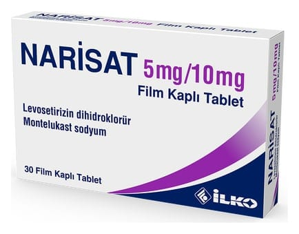

Narisat 5 mg/10 mg Film Kaplı Tablet, 90 Tablet

Ne için kullanılır
KT · Bölüm 1NARİSAT, 5 mg levosetirizin dihidroklorür ve 10 mg montelukast içeren, bir tabakası sarı, diğer tabakası beyaz, çift katmanlı, yuvarlak, film kaplı tabletlerdir.
Levosetirizin alerji tedavisinde kullanılan bir antihistaminiktir. Antihistaminik ilaçlar histaminin etkisini yok eder, alerji belirtilerini ortadan kaldırır. Montelukast lökotrienler adı verilen maddeleri engelleyen bir lökotrien alıcısı (reseptör) antagonistidir (karşıt etki gösteren). Lökotrienleri engelleyerek astım belirtilerini iyileştirir ve alerjik nezleyi iyileştirir. Montelukast steroid (kolesterolle ilişkili, yağ yapıda bir organik bileşik) değildir. NARİSAT alerjik rinit (burun iltihabı) ve alerjik rinitle birlikte olan astım tedavisinde ve semptomlarının giderilmesinde kullanılır.
NARİSAT film kaplı tabletler, 30 ve 90 tablet içeren Alu/Alu blister ambalajlarda piyasaya sunulmakladır. NARİSAT ayrıca, 15 yaş ve üzeri hastalarda antihistaminiklere dirençli, alerjinin yol açtığı bir deri hastalığının (kronik idiyopatik ürtiker) tedavisinde kullanılır.